Gallery - Fullbody Art
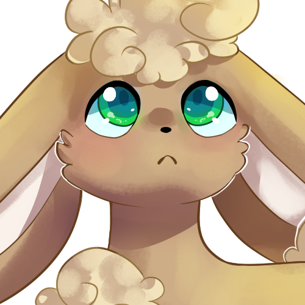
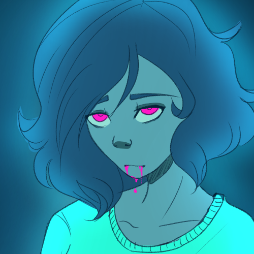
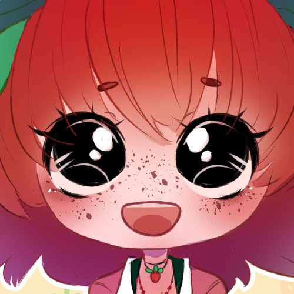
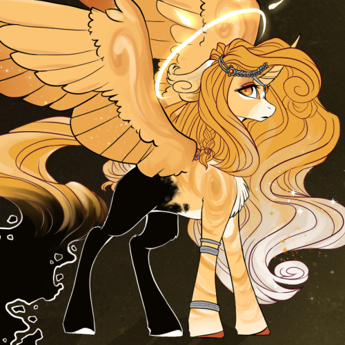
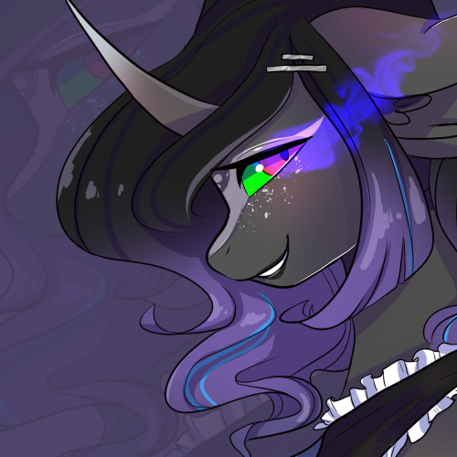
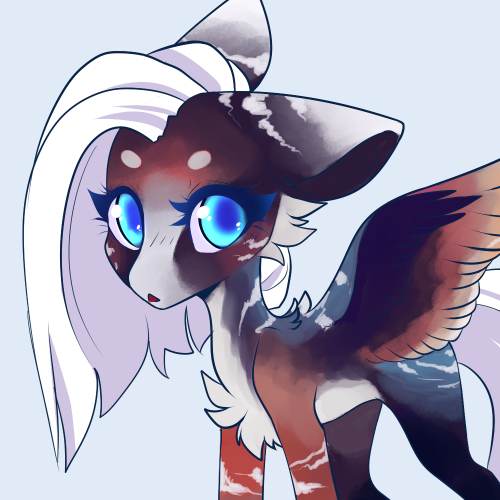
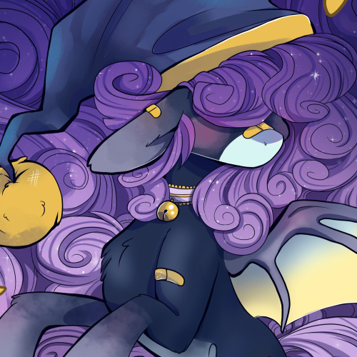
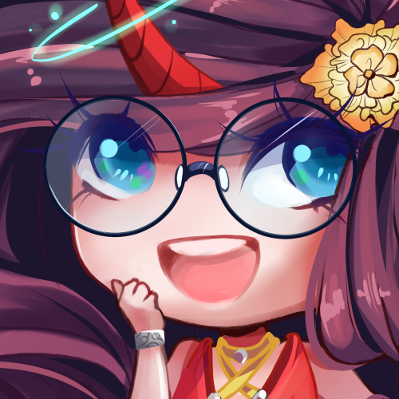
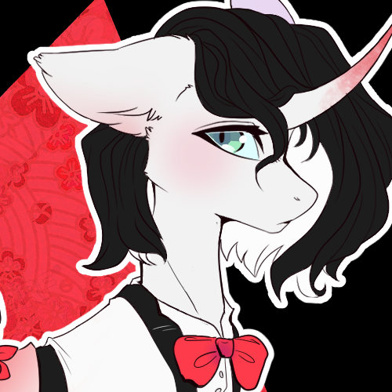
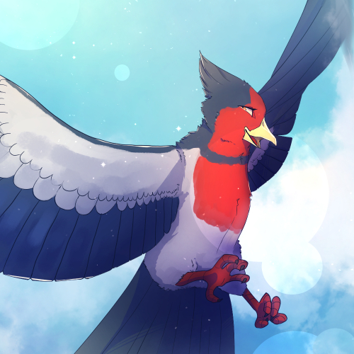
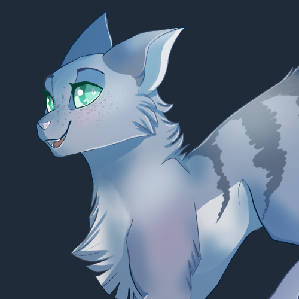

Golden
I designed this OC for Minetane on EA and they asked me to make a reference sheet of them! It was my biggest commission yet at the time, so I really went all out. It turned out so great! It is one of my proudest arts, especially considering how much the person loves the oc I designed for them.